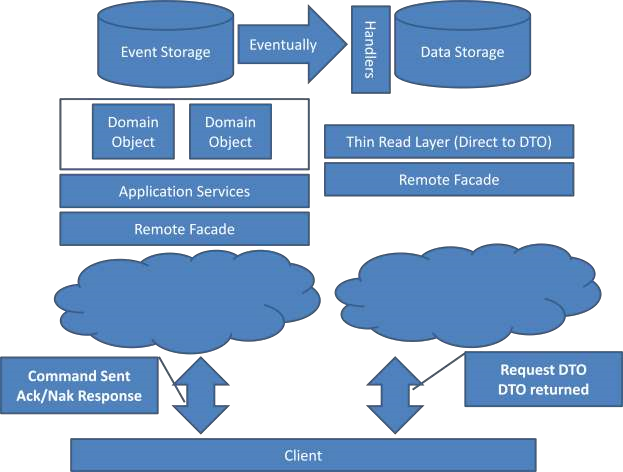
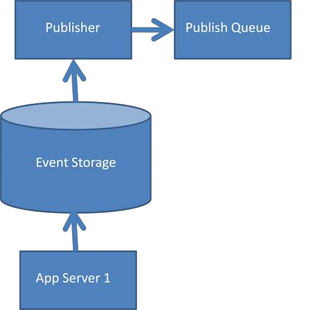
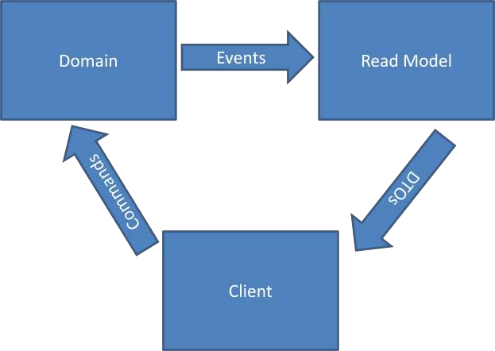
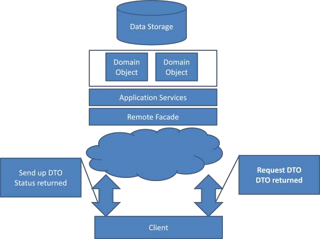
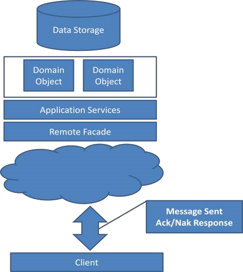

behavioral-interfaces.png
cover.png
cqrs-with-event-sourcing.png
crud-screen.jpg
deactivating-screen.jpg
event-storage-as-a-queue.png
event-stream.png
event-stream-with-snapshot.png
high-level-view-cqrs-event-sourcing.png
interaction-in-dto-architecture.png
listing-screen.jpg
separated-data-models.png
snapshotter.png
stereotypical-architecture-2.png
stereotypical-architecture-commands.png
stereotypical-architecture.png
structural-view-of-an-order.png
the-command-side.png
the-query-side.png
two-phase-commit.png
typical-client-interaction.png